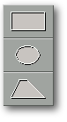

<!-- Documentation Xclamation (c)1994-2000 AXENE contact axene@axene.org>
<html>

<head>
<title>Contextual menus</title>
</head>

<body BGCOLOR="#FFFFFF" BACKGROUND="Images/back.gif" TEXT="#000000">

<p ALIGN="right"> </p>

<p><br>
<br>
The contextual menus are roll-down menus whose options differ depending on where the
cursor is located. To open a contextual menu, place the mouse on a fixed spot and hold
down the right button without moving the mouse. <br>
<br>
</p>

<hr>
<a NAME="cm_no_frame">

<h3>Display Screen Contextual Menu:</h3>
</a>

<p align="center"><br>
 </p>

<p>To open the display screen contextual menu, place the arrow on the display screen of
the active document outside all other framed areas. The menu contains three options: 

<ul>
  <li><a NAME="create_rectangle_icon">The first button with the rectangular icon <b>creates
    rectangular frames</b>. </a><br>&nbsp;</li>
  <li><a NAME="create_ellipse_icon">The elliptical icon <b>creates elliptical frames</b>. </a><br>&nbsp;</li>
  <li><a NAME="create_polygon_icon">The trapezoid icon <b>creates various forms polygonal
    frames</b>. </a><br>&nbsp;</li>
</ul>

<p><br>
</p>

<hr>
<a NAME="cm_frame_empty">

<h3>Empty Frame Contextual Menu:</h3>
</a>

<p align="center"><br>
 </p>

<p>To open the empty frame contextual menu, place the pointer on the display screen of the
active document inside an empty frame. The frame will be selected automatically and any
commands will be carried out solely on this frame. This menu contains four options: 

<ul>
  <li><a NAME="import_text_icon">The first button <b>imports text</b> into the frame. The '</a><a HREF="Box_File_Selectors.html#fs_import_text">Import text</a>' file selector opens so that
    the name of the file to import may be chosen. <br>&nbsp;</li>
  <li><a NAME="import_image_icon">The second button <b>imports images</b> into the frame. The
    '</a><a HREF="Box_File_Selectors.html#fs_import_image">Import images</a>' file selector
    opens so the file to import may be chosen. <br>&nbsp;</li>
  <li><a NAME="import_vector_icon">The third button <b>imports a line art</b> into the frame.
    The '</a><a HREF="Box_File_Selectors.html#fs_import_vector">Import line art</a>' file
    selector opens so that the name of the file to import may be chosen. <br>&nbsp;</li>
  <li><a NAME="editor_icon">The fourth button <b>creates text</b> to fill the frame. The </a><a HREF="Box_Editor.html">text editor</a> opens so the text may be typed. <br>&nbsp;</li>
</ul>

<p><br>
</p>

<hr>
<a NAME="cm_editor">

<h3>Text frame contextual menu:</h3>
</a>

<p align="center"><br>
 </p>

<p>To open the Text Frame contextual menu place the pointer inside a text frame on the
display screen of the active document. That frame will be selected automatically and the <a HREF="Box_Editor.html">text editor</a> will appear to help <b>modify the text in the frame</b>.
</p>

<p><br>
</p>

<hr>
<a NAME="cm_pager">

<h3>Page Manager Contextual Menu:</h3>
</a>

<p align="center"><br>
 </p>

<p>To open the Page Manager contextual menu place the mouse on a page icon in the manager
and press and hold on the left mouse-button. The indicated page will be selected and
commands will be carried out on it. This menu contains four options: 

<ul>
  <li><a NAME="add_page_before_icon">The first button <b>adds a page preceding</b> the
    selected page. The new page will have the same characteristics as the selected page, but
    will be empty. </a><br>&nbsp;</li>
  <li><a NAME="add_page_after_icon">The second button <b>adds a page succeeding</b> the
    selected page. The new page will have the same characteristics as the selected page, but
    will be empty. </a><br>&nbsp;</li>
  <li><a NAME="modify_page_icon">The third button allows <b>modification of page
    specifications</b>. The '</a><a HREF="Box_Modify_Page.html">page specification</a>' dialog
    box will open. <br>&nbsp;</li>
  <li><a NAME="destroy_page_icon">The last button <b>deletes the selected page</b>. Warning!
    The contents of the deleted page will be permanently lost. </a><br>&nbsp;</li>
</ul>

<p><b>Note:</b> The Page Manager contextual menu is the only way to access these commands,
unlike other contextual menus which are mere shortcuts. </p>

<p><br>
</p>

<hr>

<p ALIGN="right"></p>
</body>
</html>
